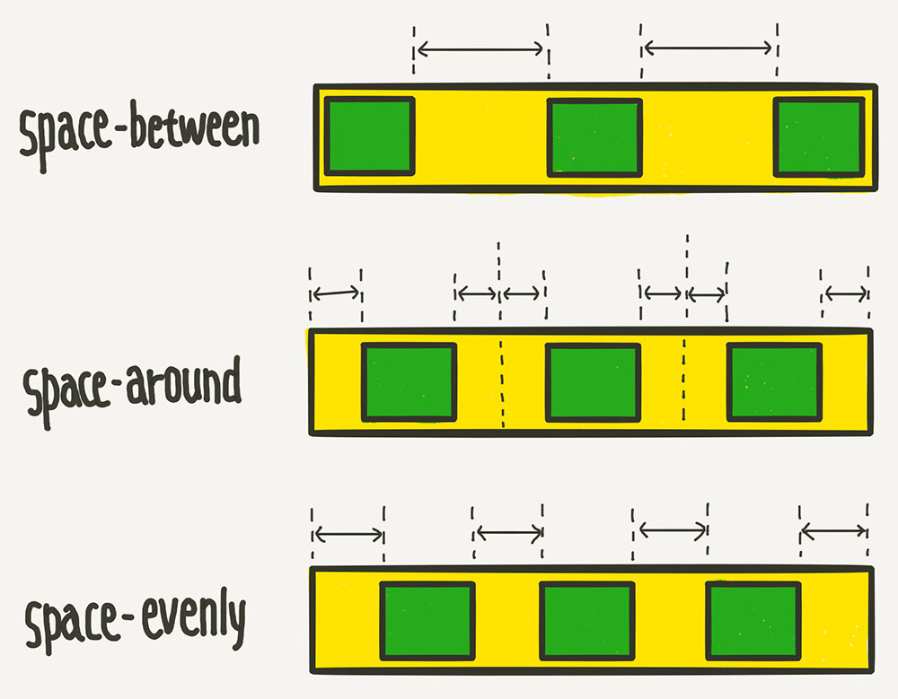

flex
flex는 기본적으로 float와 달리 contents영역의 크기만큼 설정됨
컨테이너가 더 이상 아이템들을 한 줄에 담을 여유 공간이 없을 때
nowrap(기본), wrap, wrap-reverse
flex-start(기본),flex-end, center, stretch, space-between(item 사이에 균일한 간격), space-around(item 둘레에 균일한 간격), space-evenly(item 사이,둘레 균일한 간격)

stretch(기본), flex-start, flex-end, center, baseline(제일 큰 contents영역의 밑줄기준으로 정렬)
stretch(기본), flex-start, flex-end, center, space-between(item 사이에 균일한 간격) space-around(item 둘레에 균일한 간격), space-evenly(item 사이,둘레 균일한 간격)
auto(기본값), 0, 50%, 300px, 10rem, content
flex-basis: 0 의미는 남는 공간을 비율로 나누겠다.
0(기본값), 1
flex-shrink는 0이면 flex-basis보다 크기가 자동으로 줄어들지 않는다.
flex-shrink는 1일때 해당 div는 크기가 유연하게 변한고 flex-basis보다 작아짐
flex-grow, flex-shrink, flex-basis를 한 번에 쓸 수 있는 축약형 속성 flex-grow : 전체공간을 유연하게 재분할, flex-shrink : 0보단 큰값이 들어오면 유연한게 크기가 조정됨. flex-basis : 아이템의 기본 크기를 지정 flex: 1; /* flex-grow: 1; flex-shrink: 1; flex-basis: 0%; */ flex: 1 1 auto; /* flex-grow: 1; flex-shrink: 1; flex-basis: auto; */ flex: 1 500px; /* flex-grow: 1; flex-shrink: 1; flex-basis: 500px; */
align-items의 아이템 버전입니다. align-items가 전체 아이템의 수직축 방향 정렬이라면, align-self는 해당 아이템의 수직축 방향 정렬